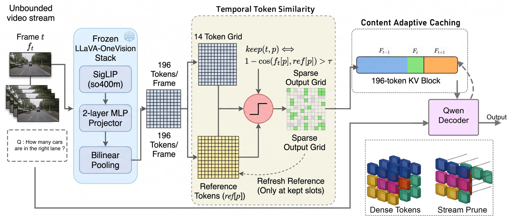
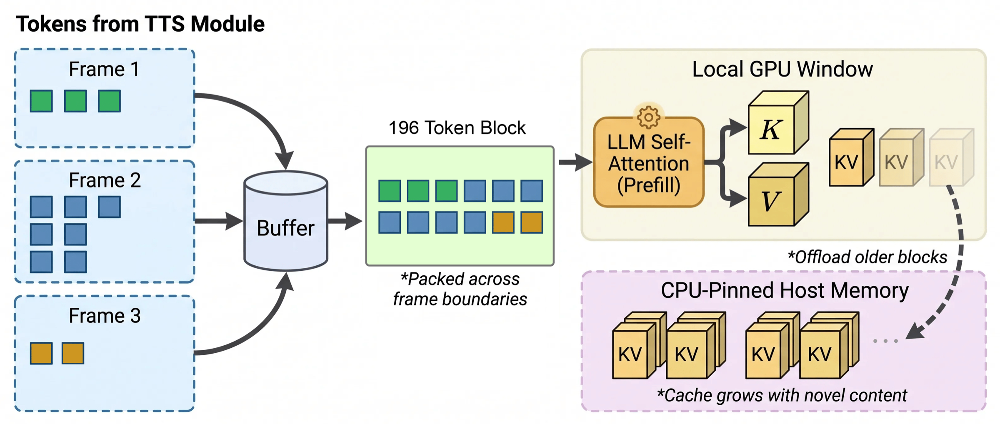

Under review at ICLR 2027


Multimodal Large Language Models (MLLMs) have made significant progress in visual-language reasoning, including long- and short-term video understanding, but sampling video at high frame rates remains computationally expensive. Perceiving fast-changing or transient events requires dense frame sampling, yet the cost of processing dense visual tokens scales with frame rate. Moreover, consecutive frames in a video stream are often highly similar, causing much of this computation to be spent on redundant content. We propose StreamPrune, a training-free, query-free, plug-and-play token pruning module for streaming video LLMs that discards visually redundant tokens using only inter-frame similarity, measured by the Temporal Token Similarity (TTS) module. It is independent of the downstream query and transfers across multiple streaming MLLM backbones. We further introduce the Content-Adaptive Caching (CAC) module, which retains only temporally novel tokens and organizes them in a content-adaptive cache that is compatible with existing streaming retrieval. Across six streaming video benchmarks, StreamPrune reduces visual tokens by 92.6 ± 1.8% and increases encoding throughput by 6.18×, at an average accuracy drop of only 0.8 ± 2.9 points (both spreads are standard deviations across the six benchmarks), while outperforming existing pruning methods on StreamingBench and StreamBench. Code will be released publicly after the review process.